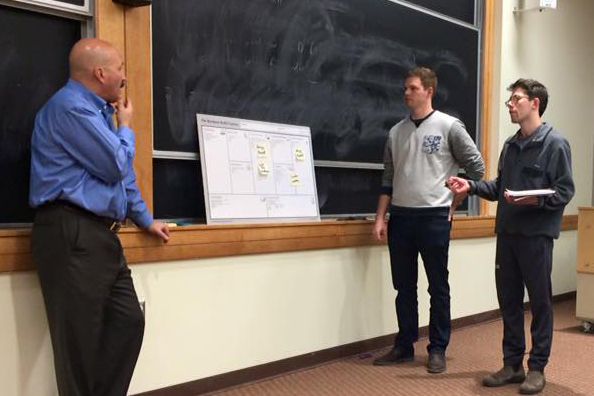
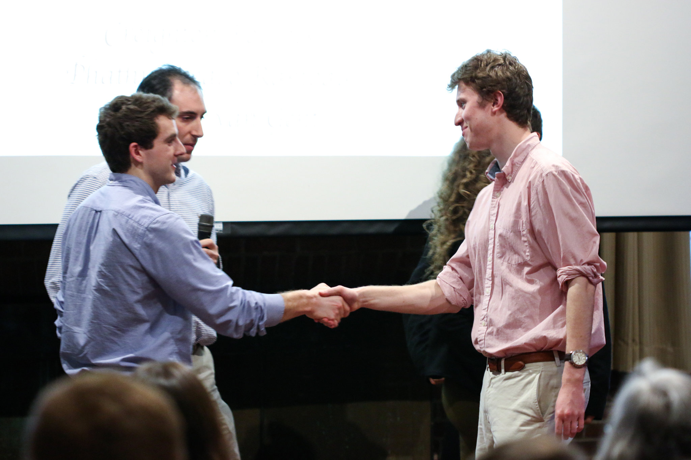

What We Do

We provide technical skills, mentorship, and business skill-building workshops.

We award prize funding to turn ideas into reality.
We engage the entire Bates community.

We provide students with the tools to launch their ideas into the world.